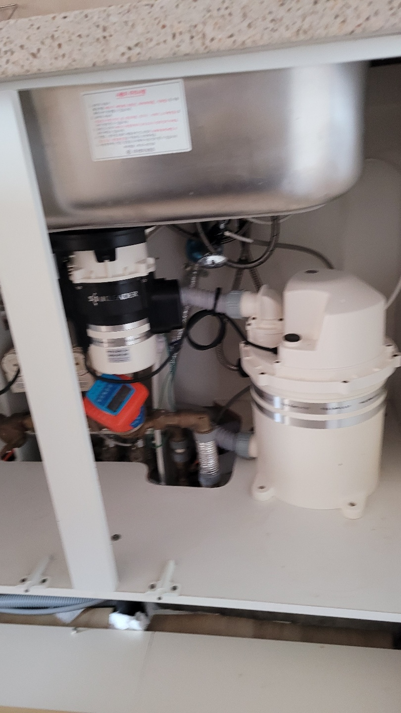
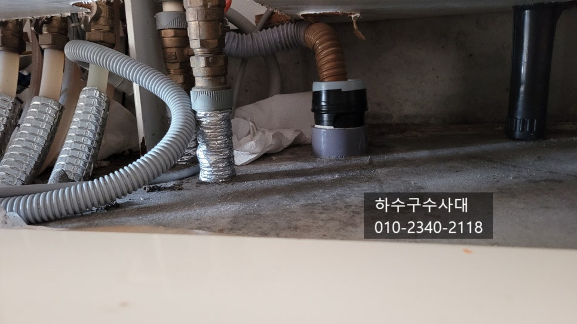
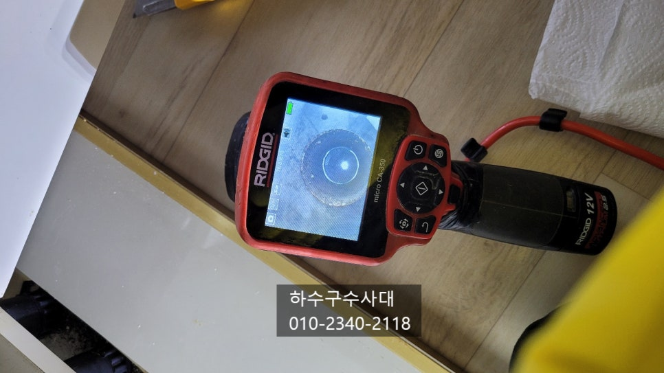
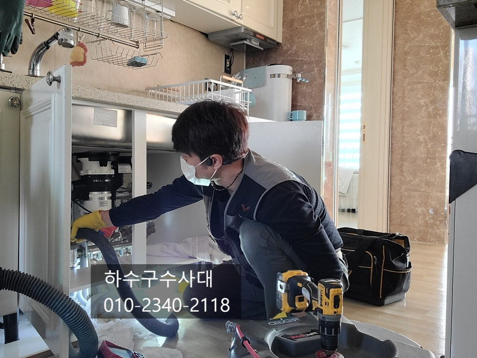
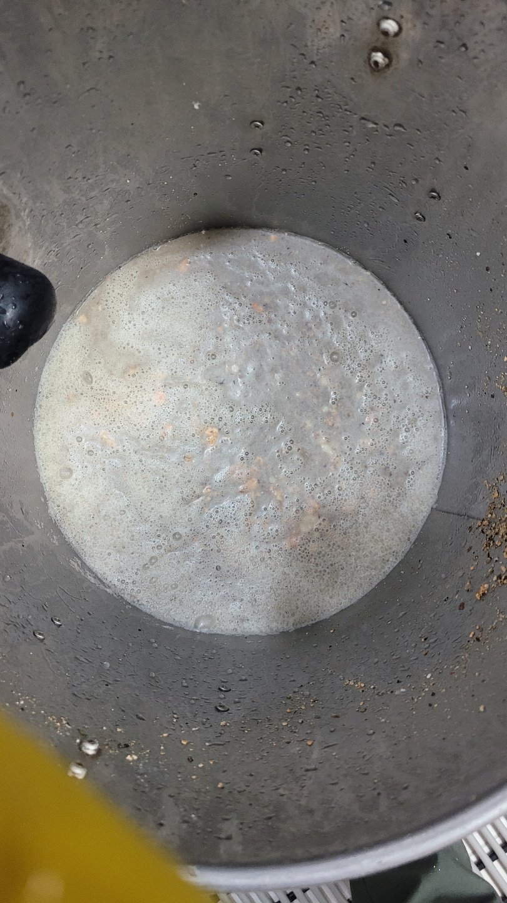
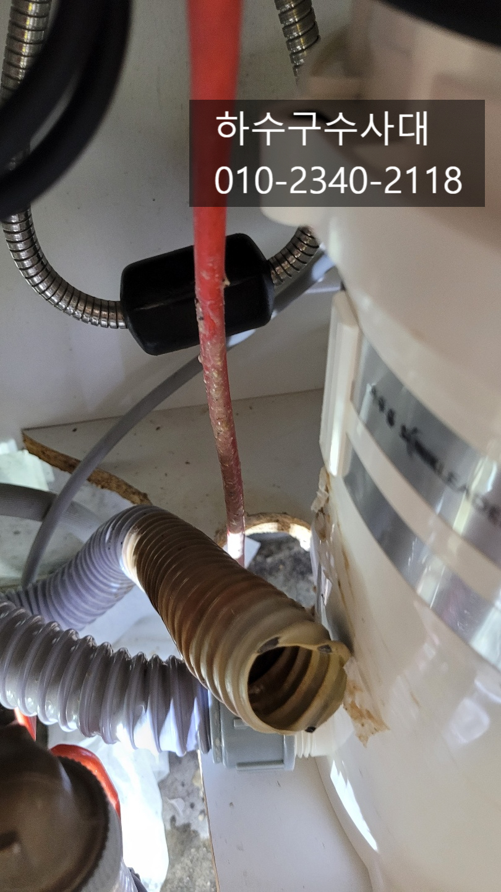
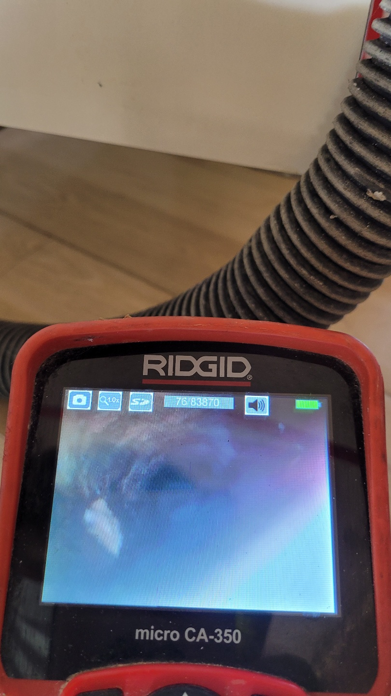

🏠 싱크리더 웰릭스 음식물처리기 막힘 원인과 예방
용인 싱크대막힘 전문 시공 후기

📋 작업 개요
- 위치: 용인
- 서비스 유형: 싱크대막힘, 하수구막힘, 배관막힘, 역류해결, 뚫는업체, 설비공사
- 작업 일시: 2021. 12. 22. 23:01
- 업체명: 하수구수사대 (010-5615-2118)
🔍 문제 상황
싱크리더 웰릭스 음식물처리기 막힘 원인과 예방
안녕하세요
"하수구수사대"입니다.
오늘은 싱크대하수구가 막혀서 고객님의
전화를 받고 출동한 현장인데요
음식물처리기를 사용하고 계셨고 음식물처리기
회사에서 기사님이 방문하셨는데 하수구쪽에서
막혀 역류하고 있는 상태였습니다.
싱크리더와 웰릭스 음식물처리기는 미생물 방식으로
음식물을 처리하여 배출한다고 알고는 있는데
어떤식으로 배출되는지는 저도 자세히는 모르겠습니다;;
일반적은 음식물분쇄기와 달리 한번더 미생물로 분해해서 내보내는거
같은데 일단 음식물을 따로 버리지 않는건 일반분쇄기와 같다고 볼수있습니다.
음식물처리기에 넣지 말아야할 음식물들이 있는데요 예를들면
계란껍질이나 뿌리가있는 채소류,닭뼈나 조개껍질 그리고 쌀도
넣지 말아야 합니다.
계란껍질의 경우 갈려 내보내기는 하지만 껍질이 물에 뜨지않기 때문에
갈린 계란껍질은 하수구배관에서 머물러있고 댐처럼 물을 지나가지
못하게 막고있기 때문이에요. 쌀같은 경우도 갈리기는하지만
떡처럼 서로 뭉쳐서 배관을 꽉! 막을수 있기 때문입니다.

🔎 원인 분석
💡 전문가 진단: 하수구수사대010-2340-2118
하수구입구쪽을 열어 내시경으로 보니 완전히 막혀
물이 고여있는것이 보여집니다.
2년전 음식물처리기를 설치할때 방문기사님께서
하수구 물이 잘 빠지지 않는다고는 하셨다는데요
이처럼 음식물처리기를 설치할때는 한번쯤은 물이 잘
내려가는지 테스트를 해보고 설치하는 것도 좋습니다.
테스트 방법은 싱크대위에 물을 많이 받아놓고 한번에
내려주었을때 위에서 시원하게 물이 내려가는지
하수구에서 역류하지는 않는지 확인을 해주는것도
좋은 방법입니다.
가장 확실한 방법은 내시경카메라고 검수를 해주는게
좋습니다.
입구부터 물이 있어 석션장비로 하수구에 있는
물과 이물질을 흡입하여 빼내었는데요 아무래도
하수구에 음식물찌거기가 썩으면서 심한 악취가 나기때문에
혹시 싱크대밑에서 악취가 난다면 하수구를 의심할
필요가 있습니다.
하수구수사대
010-2340-2118
석션으로 이물질과 물을 제거하고 난후 내시경카메라로

🔧 작업 과정
하수구를 다시 확인해보니 배관 위쪽에 기름덩어리가
많이 붙어있는것을 확인이 되었습니다. 이렇게 기름덩어리가
무너져 또 막힐수 있기때문에 모두 제거해주는게 좋아요.
하수구에 기름이 붙는 이유는 여러가지가 있지만
대부분 구배! 즉 기울기가 좋지않아 물이고여있는 구간이 생기고
그곳에 기름이 정체되어 배관에 조금씩 붙어 덩어리가 되는 형태입니다.
여기서가 문제인데요 특히 음식물처리기를 사용하면
음식물을 갈아서 배출하기때문에 물이 고여있는구간에
쌓이게되면 배관에 더 빨리 기름덩어리가 형성된답니다!
그렇기 때문에 음식물처리기를 설치하기전에 하수구
배관은 미리 점검해보고 설치하는것을 추천드리고 있어요^^
이미 형성된 기름덩어리는 자연적으로 제거되기 쉽지 않기 때문에
장비를 넣어서 제거해주는데요 마찬가지로 내시경카메라로
보면서 기름을 제거하기때문에 완벽하게 작업이 이루어지고
자신있게 1년as를 해드리고 있습니다^^
오늘 방문한 고객님집은 또 다른 큰 문제가 있었는데요
바로 싱크대호스입니다. 호스가 배관안에 들어가 있었는데요
아마도 예전에 싱크대배수통을 교체하거나 음식물처리기를
설치하는 과정에서 기존에 있던 싱크대호스가 부러져
들어간것으로 추측이 됩니다 ㅜㅜ
몇몇분들이 싱크대호스를 깊게 넣어놔야 하수구가 막히지 않는다는
이야기를 하는데 전혀 근거없는 이야기이고 오히려
싱크대호스가 오래되면 딱딱하게 경화되기 때문에
교체시 부러져 하수구에 빠지는 불상사가 생기기 때문에
절대 깊게 넣어서는 안됩니다.!!!!
하지만 걱정마세요^^
"하수구수사대"는 절대 포기하는 일이 없으니까요
노하우와 인내력으로 하수구에 있던 싱크대호스를
빼내는데 성공하였습니다^^
간혹 싱크대호스를 빼기위해 바닥을 깨고 공사를
해야한다는 기사분들도 있는데요 그건 정말
마지막 방법이라고 보시면 되세요


✅ 작업 완료
내시경카메라로 보면서 대부분 빼낼수 있는데 굳이
시끄럽게 땅을깨고 공사까지 할 필요는 없답니다.
이제 하수구배관도 깨끗해 졌으니 물을 받아서
내려주는데요 이처럼 하수구가 뻥! 뚫려있다면
물이다 내려갈때쯤 뭔가 소리가 들리실 겁니다.
막혀있다면 이런소리가 나지 않아요^^
"하수구수사대"는 수도권 전지역에서
활동하고 있으니 하수구막힘으로
고민중이시라면 언제든지 연락주세요!




⚠️ 주방 싱크대 배관 막힘 예방 수칙
- ✅ 기름기가 묻은 식기나 프라이팬은 설거지 전 키친타올로 반드시 기름때를 닦아내세요.
- ✅ 주기적으로 싱크대 개수대에 뜨거운 물을 가득 받아 한 번에 내려 배관 내부 기름을 씻어내세요.
- ✅ 배수구 거름망을 미세한 필터로 사용하시고 음식물 찌꺼기가 틈으로 새어 들지 않게 관리하세요.
- ✅ 베이킹소다와 식초를 뜨거운 물과 함께 일주일에 한 번씩 부어주면 배관 살균과 막힘 예방에 좋습니다.
💡 핵심 정리
- 확실한 장비 작업(내시경 점검 및 샤프트 스케일링)으로 원인을 뿌리 뽑습니다.
- 작업 후 1년 이내에 동일한 부위 재발 시 100% 무상 A/S 서비스를 보장합니다.
- 서울 · 경기 · 인천 전 지역에 24시간 언제든 긴급 출동할 수 있도록 항시 대기 중입니다.
❓ 자주 묻는 질문 (FAQ)
🚨 용인 싱크대막힘 문제로 고민이신가요?
정확한 원인 진단과 확실한 시공으로 재발 없는 해결을 약속드립니다.
24시간 긴급 출동 | 서울 · 경기 · 인천 전지역 | 1년 내 재발 시 무상 A/S